Abstract
Monocular depth estimation assigns a depth to each pixel of a single RGB image, but a single image does not determine absolute scale. This project benchmarks Depth Anything V2, a pretrained relative-depth model, against a classical depth-from-focus baseline that measures local sharpness across a focal stack. We then use confident focus measurements to fit an affine scale correction and a regularized local refinement, recovering metric depth where the stack supports it. Evaluation is on the NYU-Depth v2 test set, rendered synthetic scenes, and the DDFF 12-Scene dataset, reporting AbsRel, RMSE, and δ1.
In short: DA-V2 Large aligns to δ1 = 0.961 on NYU-Depth v2 (Table 1), and on the held-out synthetic scenes the combined system reaches AbsRel 0.206 against 0.232 for the focus baseline alone, falling back to the focus estimate whenever scale calibration is rejected (Table 2).
Motivation
A single RGB image does not determine metric scale: a small nearby object and a large distant one can produce identical projections, so appearance fixes depth only up to an unknown scale and shift. Benchmark numbers like those in Table 1 hide this, because every prediction is aligned to ground truth before scoring; a deployed system does not get that alignment.
A focal stack is one way to break the ambiguity. Under a thin-lens model, the blur at a pixel grows as the scene depth moves away from the focus distance (Fig. 2). The focus settings are known in meters, so the frame where a patch comes out sharpest is an absolute depth measurement rather than a relative one. The catch is that the measurement only exists where the surface has enough texture to blur, which is why we combine it with a learned prediction instead of using it on its own.
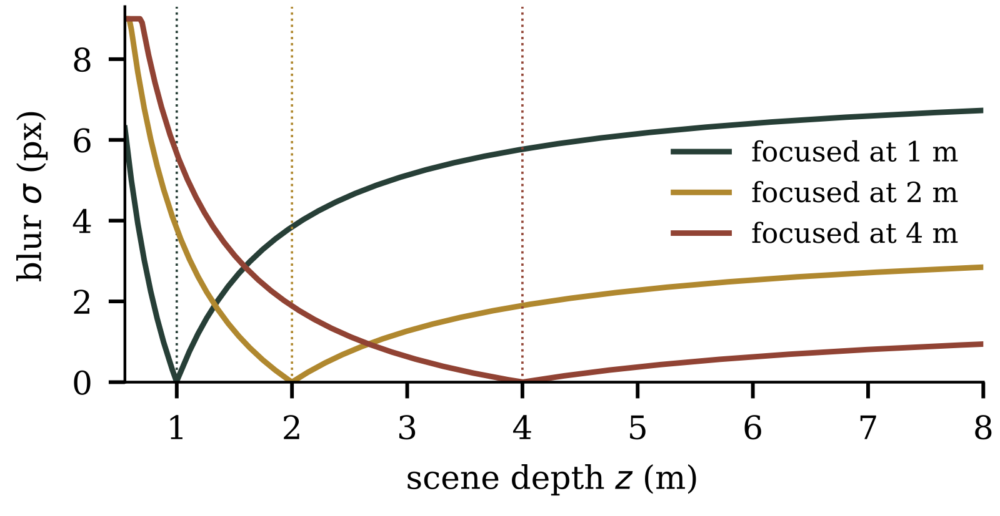
Methods
Learned baseline
The sharpest frame of the stack, chosen by a global focus measure over all frames, serves as the reference image. It is passed through Depth Anything V2 (ViT-S) using the published weights, without retraining. The model produces a relative inverse-depth map d̂(x) that captures scene structure but not absolute scale.
Depth from focus
A focal stack is captured from a fixed viewpoint at calibrated focus settings. At each pixel we measure sharpness across the stack with the modified Laplacian (Nayar and Nakagawa, 1994) and interpolate parabolically around the peak setting, giving a focus depth zF(x). Flat or ambiguous focus curves receive low confidence w(x) ∈ [0, 1]; this occurs mainly on textureless surfaces and near depth boundaries. The sharpest pixels across the stack are fused into an all-focus image, which guides a confidence-weighted normalized-convolution smoothing of the raw estimate in inverse-depth space.
Scale fitting and refinement
Confident focus measurements constrain an affine transformation of the predicted inverse depth plus a local correction r:
q(x) = s d̂(x) + t + r(x), z(x) = q(x)−1
mins,t,r ∑x w(x) ρ(q(x) − zF(x)−1) + λ ∑x ||∇r(x)||2 + μ ∑x r(x)2, q(x) ≥ ε > 0
Global scale (s, t) is fit first with r = 0, then local corrections are allowed. The Huber loss ρ limits the influence of unreliable focus measurements; the penalties on ∇r and r discourage abrupt or large changes where focus evidence is weak. If the learned prediction disagrees with the focus measurements (nonpositive fitted slope, or too few confident pixels to support the fit), calibration is rejected and the combined system output falls back to the focus estimate, so a degenerate fit cannot make the output worse than the focus estimate alone.
Implementation details
Synthetic focal stacks
Each synthetic scene is a color image with a per-pixel depth map at 480×320. Frames are rendered under a thin-lens blur model: a point at depth z seen at focus distance zf is convolved with a Gaussian of width
σ(z, zf) = fpx f / (2N (zf − f)) · |1 − zf / z|
with focal length f = 25 mm, f-number N = 2, fpx = 1200 px, and σ capped at 9 px. The scene is split into 28 depth bins and each bin is blurred on its own before compositing, so occlusion edges stay sharp instead of haloed. Six layouts (gallery, corridor, slanted, objects, stairs, shelves) mix textured and flat surfaces; the texture images are the HW1 assets. Stacks use 10 focus settings spaced geometrically from 0.9 to 7 m with a small amount of additive noise. Gallery and stairs are the tuning set used to pick regularization weights; corridor, objects, slanted, and shelves are held out for the reported numbers.
Depth from focus
The focus measure is the modified Laplacian of Nayar and Nakagawa, summed over 11 px windows on the luma channel. Each pixel takes the argmax focus setting, refined by parabolic interpolation on the inverse-depth axis. Confidence combines three terms: the peak's prominence over the rest of the stack, its curvature, and an absolute gate on the focus-measure magnitude that sends flat, noise-floor regions to w ≈ 0. The all-focus image is a focus-measure-weighted blend of the stack and guides the confidence-weighted smoothing described above.
DDFF stacks arrive as refocused lightfield slices with no recorded focus distances. We reconstruct them from the refocus geometry in the paper: the slices correspond to disparities of 0.28 to 0.02 px on the Lytro Illum rig, which map to focus distances of 0.5 to 7 m through z = 0.14/disp. The archive does not say whether the slice order runs near-to-far or far-to-near, so on each sequence we compute the focus depth under both orders and keep the one that better correlates with the DA-V2 inverse-depth prediction (Spearman rank correlation on confident pixels).
Alignment variants
Table 1 aligns relative predictions to ground truth three ways: least-squares scale and shift on inverse depth, a single median scale ratio, and reweighted least squares (IRLS) with a Huber loss. The median variant fails badly (AbsRel 0.494 versus 0.062 for least squares): DA-V2 inverse depth needs both terms of the affine fit, so a scale-only correction lands on the wrong depth range even where the ordering is right. IRLS is slightly better than plain least squares (0.058 versus 0.062). The scale fit in our pipeline uses the same IRLS on confident focus pixels, with a final pass that refits after dropping the 10% largest residuals to discard confident-but-wrong focus returns at depth boundaries.
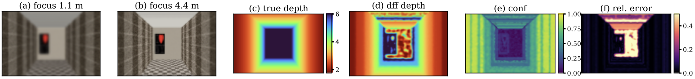
Results
We report absolute relative error (AbsRel), RMSE, and δ1, the fraction of valid pixels satisfying max(z/zgt, zgt/z) < 1.25. The learned baselines are evaluated on the standard 654-image NYU-Depth v2 test set under the Eigen crop. Focal-stack experiments use six rendered synthetic scenes, split into a tuning set (gallery, stairs) used to pick regularization weights and a held-out evaluation set (corridor, objects, slanted, shelves) used for the numbers below, plus DDFF 12-Scene real stacks. Metric predictions are scored without ground-truth alignment; aligned scores are reported separately.
NYU-Depth v2
Table 1. NYU-Depth v2 test set (654 images), Eigen crop. Relative-depth checkpoints are aligned per image; the metric indoor checkpoint is also shown unaligned.
| Method | AbsRel | RMSE | δ1 |
|---|---|---|---|
| DA-V2 Small (scale+shift) | 0.062 | 0.297 | 0.956 |
| DA-V2 Small (robust IRLS) | 0.057 | 0.292 | 0.958 |
| DA-V2 Small (median scale) | 0.494 | 2.349 | 0.393 |
| DA-V2 Base (scale+shift) | 0.057 | 0.283 | 0.959 |
| DA-V2 Large (scale+shift) | 0.055 | 0.277 | 0.961 |
| DA-V2 Metric Indoor (unaligned) | 0.218 | 0.651 | 0.670 |
| DA-V2 Metric Indoor (aligned) | 0.077 | 0.353 | 0.936 |
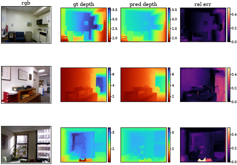
Synthetic scenes
Table 2. Held-out synthetic scenes (corridor, objects, slanted, shelves). Constant depth predicts one weighted-mean depth per scene, a sanity floor. DA-V2 Metric Indoor is the monocular metric checkpoint scored with no alignment — it is what the stack has to beat to justify existing. Oracle-aligned fits an affine to ground truth, which no deployed system can do. Combined uses the refined output where calibration succeeds and the focus estimate where it is rejected.
| Method | AbsRel | RMSE | δ1 |
|---|---|---|---|
| Constant depth | 0.451 | 2.310 | 0.179 |
| DFF raw | 0.232 | 1.562 | 0.737 |
| DFF + all-focus smooth | 0.221 | 1.510 | 0.702 |
| DA-V2 (oracle-aligned) | 0.271 | 1.524 | 0.548 |
| DA-V2 Metric Indoor (unaligned) | 0.449 | 2.471 | 0.166 |
| DA-V2 + scale fit | 0.308 | 1.614 | 0.459 |
| Refined (ours) | 0.259 | 1.483 | 0.575 |
| Combined (ours) | 0.206 | 1.284 | 0.704 |
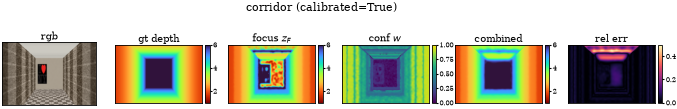
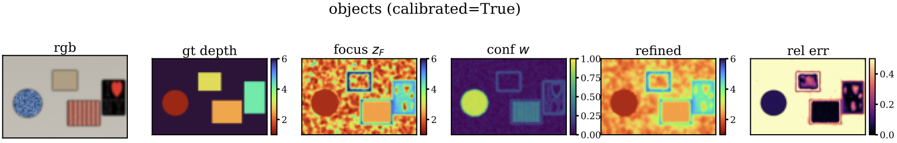
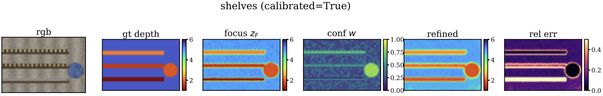
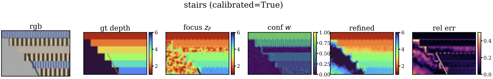
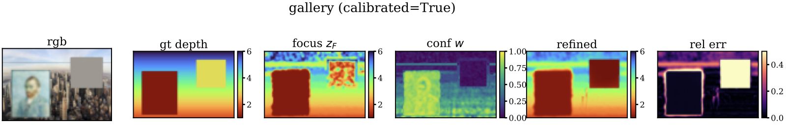
Ablations
All ablations run on the two tuning scenes (gallery and stairs) and average over all valid pixels. Unless varied, the settings are 10 frames, learned confidence weights, λ = 1, and μ = 0.01, the values behind Table 2.
Table 3. Stack size N on the tuning scenes. With two frames the parabolic peak fit is degenerate, so that DFF row is marked rather than scored; the refined row is poor there as well. Going from 5 to 10 frames still helps AbsRel, while δ1 is already near flat.
| Frames | Method | AbsRel | RMSE | δ1 |
|---|---|---|---|---|
| 2 | DFF | degenerate | ||
| 2 | Refined | 0.886 | 20.578 | 0.352 |
| 3 | DFF | 0.303 | 1.592 | 0.480 |
| 3 | Refined | 0.419 | 1.696 | 0.354 |
| 5 | DFF | 0.222 | 1.373 | 0.717 |
| 5 | Refined | 0.248 | 1.338 | 0.692 |
| 10 | DFF | 0.165 | 1.344 | 0.720 |
| 10 | Refined | 0.176 | 1.272 | 0.717 |
Table 4. Confidence weighting in the data term on the tuning scenes. Uniform weighting actually edges out confidence weighting on the tuning mean (0.162 versus 0.176 AbsRel), driven by gallery; we keep the confidence term anyway since the same w drives the coverage check and the guided smoothing.
| Data weight | AbsRel | RMSE | δ1 |
|---|---|---|---|
| confidence w | 0.176 | 1.272 | 0.717 |
| uniform (w = 1) | 0.162 | 1.308 | 0.719 |
Table 5. Smoothness weight λ on the tuning scenes. The response is flat between 0.3 and 3; we use λ = 1.
| λ | AbsRel | RMSE | δ1 |
|---|---|---|---|
| 0 | 0.177 | 1.248 | 0.698 |
| 0.3 | 0.175 | 1.255 | 0.706 |
| 1 | 0.176 | 1.272 | 0.717 |
| 3 | 0.178 | 1.294 | 0.713 |
| 10 | 0.185 | 1.317 | 0.698 |
| 30 | 0.195 | 1.343 | 0.658 |
Table 6. Correction magnitude penalty μ on the tuning scenes. μ = 0.01 is a mild optimum; at μ = 0.1 the penalty starts suppressing real corrections (stairs δ1 drops from 0.688 to 0.547).
| μ | AbsRel | RMSE | δ1 |
|---|---|---|---|
| 0 | 0.179 | 1.556 | 0.706 |
| 0.001 | 0.176 | 1.345 | 0.712 |
| 0.01 | 0.176 | 1.272 | 0.717 |
| 0.1 | 0.195 | 1.259 | 0.662 |
Real stacks
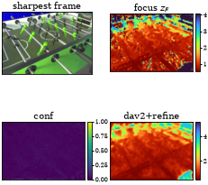
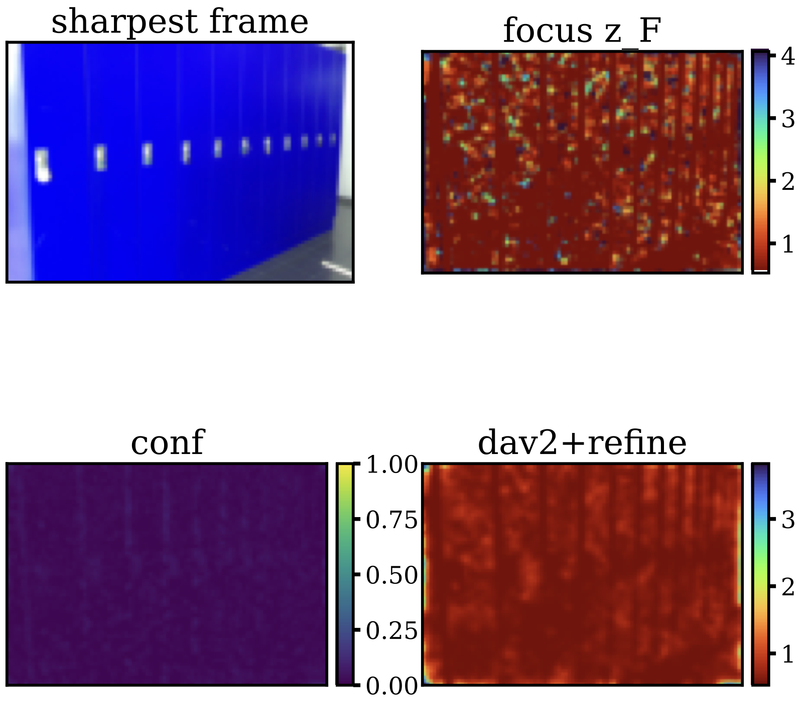
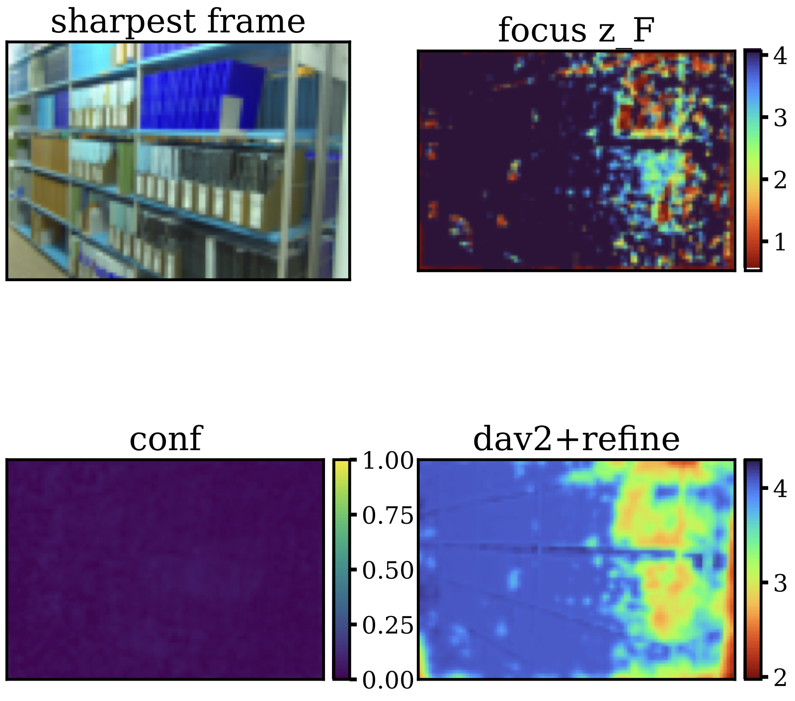
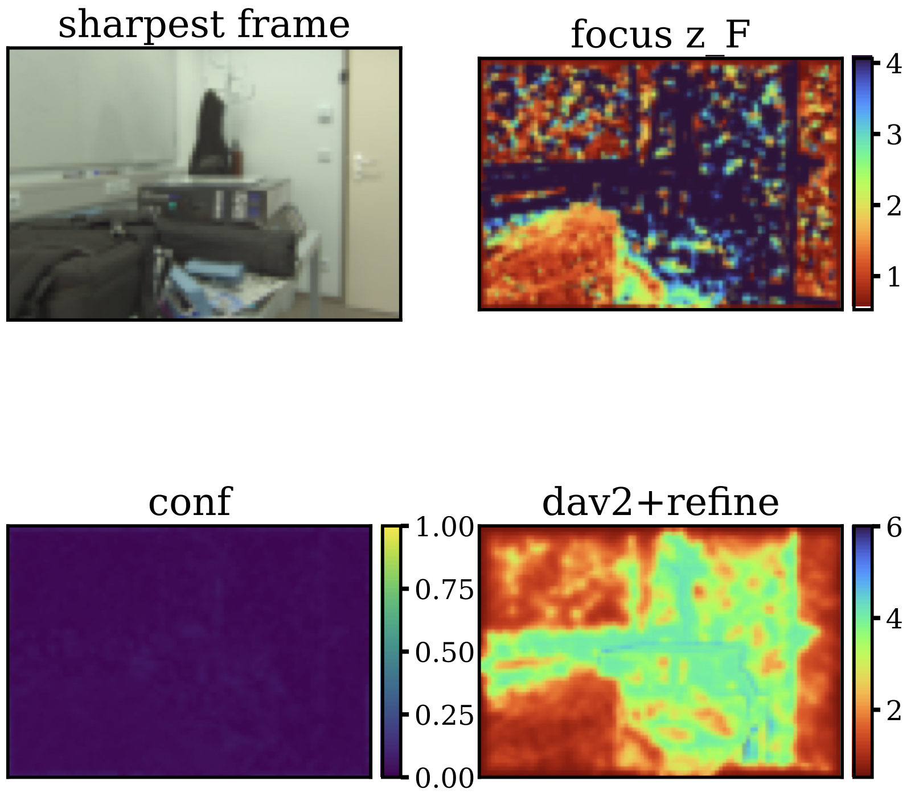
One note on the DDFF results: the public test archive contains focal stacks but no registered depth (the official ground truth was withheld for the benchmark server), and the per-frame focus distances are not recorded, so we reconstruct them from the refocus geometry in the paper. As a check on the assumed slice order we rank-correlate each stack's focus estimate with the learned prior in both directions: 15 of the 120 stacks fit better reversed, and with per-stack confidence normalization calibration is accepted on 110 of 120 (per-stack rows). Quantitative numbers on real stacks are therefore not meaningful; the qualitative panels above still exercise the full pipeline on camera-captured data. Quantitative evaluation of the refinement uses the rendered scenes, where the true depth and focus distances are known exactly.
Failure cases
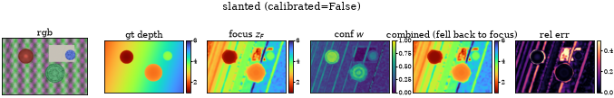
Discussion and limitations
Focus is a strong cue where it works and no cue where it does not. On the textured corridor walls the raw focus estimate reaches AbsRel 0.026, better than anything else in Table 2; on the textureless regions of the same scene (the ceiling and flat back wall) it is 0.42, and on the mostly flat objects scene the mean confidence is only 0.14. The confidence map tracks this split closely, which is what lets the refinement lean on the learned prior exactly where the stack is uninformative.
Table 7. The same eval scenes split by texture (pixels are partitioned on a median texture measure). The learned prior is flat across the split; every focus-based method swings with it, and on textured pixels the combined output posts the lowest mean error we measured.
| Method | AbsRel low-tex | AbsRel high-tex | δ1 low-tex | δ1 high-tex |
|---|---|---|---|---|
| Constant depth | 0.474 | 0.429 | 0.158 | 0.200 |
| DFF raw | 0.248 | 0.217 | 0.665 | 0.808 |
| DFF + all-focus smooth | 0.253 | 0.189 | 0.628 | 0.777 |
| DA-V2 (oracle-aligned) | 0.271 | 0.272 | 0.522 | 0.575 |
| DA-V2 Metric Indoor (unaligned) | 0.473 | 0.424 | 0.165 | 0.166 |
| DA-V2 + scale fit | 0.334 | 0.283 | 0.405 | 0.512 |
| Refined (ours) | 0.295 | 0.223 | 0.524 | 0.627 |
| Combined (ours) | 0.233 | 0.180 | 0.664 | 0.745 |
Depth boundaries are the harder failure. Defocus blur mixes foreground and background at occlusion edges, so focus curves there can peak confidently at a wrong depth. The trimmed IRLS fit drops the worst 10% of residuals and removes most of these, but objects still shows the cost: the refined output (0.472) ends up worse than the scale fit alone (0.439), pulled by confident wrong measurements around the object edges.
The rejection rule pays for itself on the slanted scene, where the learned prediction and the focus depths disagree enough that the fitted slope comes out nonpositive. Calibration is rejected and the combined system returns the focus estimate (AbsRel 0.087) instead of the merged result (0.297). The worst case is then the better of the two inputs rather than a broken merge; the cost is that genuinely useful corrections are occasionally thrown out with the bad ones.
The combined row is not uniformly better, though. On shelves the accepted merge (0.212) still trails the smoothed focus estimate (0.188) it would have fallen back to, and on objects it is worse than every input. The rejection gate only guards degenerate fits, not mediocre merges, and on the aggregate numbers the combined system buys mean error at a small δ1 cost (0.704 versus 0.737 for raw DFF): raw per-pixel maxima stay sharp exactly where texture exists, which is what δ1 rewards. One more caveat on precision: these are single-seed results, and the same nominal configuration moved by up to a factor of two across seeds in our ablation runs (stairs refined AbsRel 0.090 versus 0.188), so differences of a few points on four scenes should be read as margins, not proofs.
Two qualifications on the real data. The DDFF test split has no public ground truth, and the measured confidences are well below the synthetic scenes (roughly 0.01–0.03 across the 120 test stacks, versus 0.14–0.57 on ours), partly because refocused lightfield slices differ more subtly than real defocus. The refinement there also runs with λ = 3 and per-stack confidence renormalization, since the unnormalized confidences are too low for the Table 2 settings to engage the focus term. Quantitative claims on DDFF would not be meaningful, so we report qualitative output only, though the full pipeline does run end to end on camera-captured data.
Where this leaves the method: the combination helps exactly when the stack carries usable texture and the learned prior is roughly right (corridor, shelves); it adds little when the stack is mostly flat (objects), and it protects itself when the two disagree (slanted). Obvious next steps are a learned confidence that recognizes boundary mixing rather than only peak flatness, and real stacks with recorded focus distances so the cue can be quantified off synthetic data.
Reports
- Project proposal: project_proposal.pdf (also under proposal/ in the repository).
- Midterm report: midterm.pdf; due October 29, posted here after submission.
- Presentation slides: presentation.pdf.
Code
Source available on GitHub: github.com/DimitriChrysafis/cs566-project. The repository contains the benchmark library under code/depthbench (data loaders, synthetic stack renderer, depth-from-focus, DA-V2 wrapper, scale fitting, metrics) and runnable experiment scripts under code/experiments.
Download: source archive (.zip).
To reproduce the synthetic results:
pip install -r code/requirements.txt python code/experiments/fetch_data.py # downloads the datasets into data/ python code/experiments/run_synth.py # synthetic stacks, raw vs smoothed DFF python code/experiments/run_refine.py # Table 2: scale fit + refinement, tune/eval split
run_demo.sh at the repository root runs the same pipeline end to end on one synthetic scene. The CSVs behind every table are mirrored under assets/data/, for example refine_synth.csv.
References
- S. K. Nayar and Y. Nakagawa. Shape from focus. IEEE Transactions on Pattern Analysis and Machine Intelligence, 16(8):824–831, 1994.
- L. Yang, B. Kang, Z. Huang, X. Xu, J. Feng, and H. Zhao. Depth Anything V2. NeurIPS, 2024.
- N. Silberman, D. Hoiem, P. Kohli, and R. Fergus. Indoor segmentation and support inference from RGBD images. ECCV, 2012.
- C. Hazirbas, L. Leal-Taixé, and D. Cremers. Deep depth from focus. ACCV, 2018.